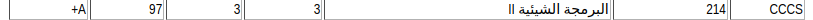
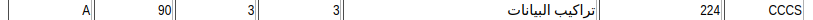
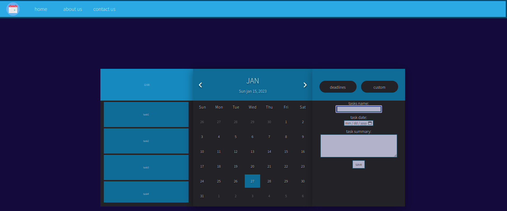

before i start listing the projects that i've worked
with in the university of jeddah, it's needed to mention
that i've lost all files of such project so i'll include
pictures of the classes of each project instead:
a TicTacToe gui project using javaFx in oo2 class:

a linkedlist program for retriving and editing or admiting employees
infos in c++ in data structrues class:

a task manger website with an included calendar, here's a preview
(still a work at progress):
